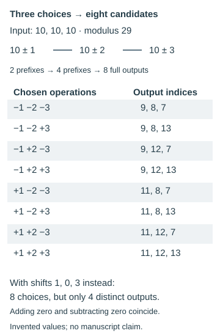

Switching rules and adaptive decoding
Distinguish predetermined switches from choices fitted to a desired reading.
On this page
A switching rule changes the operation during decoding. The switch might depend on position, a visible marker, a running state or a recovered symbol. Such a cipher can be precisely defined. The difficulty comes when the solver chooses the switch after deciding which output looks best: those choices become part of the key and the search.
Three different kinds of switching
| Rule | Example | What must be recorded |
|---|---|---|
| Position-driven | Add on even positions, subtract on odd positions. | Index origin, signs and reset boundaries. |
| Input- or state-driven | A specified marker changes the mode for the next symbol. | Trigger, timing, state transition and treatment of the marker. |
| Solver-selected | Choose whichever operation gives a plausible next letter. | Every allowed choice, selection criterion and resulting search size. |
The first two can be evaluated as fixed algorithms once all their details are declared. The third can also be studied, but the decoder is no longer specified by its few arithmetic operations alone. Its sequence of choices must be counted and tested.
How local choices accumulate
If every one of n positions independently allows addition or subtraction of a fixed shift, there are 2n choice sequences. At 20 positions that is 1,048,576 configurations. Some may coincide—for example, adding and subtracting zero give the same result—so report distinct outputs as well as configurations.

Reproduce both enumerations with python scripts/switching_choices_example.py. The standard-library script writes the figure and exact rows, checking configuration counts and distinct outputs. Download script · Download rows. This is a mathematical illustration, not an LP decoding test.
More extreme freedom makes a proposed reading unavoidable: for any desired rune sequence p and ciphertext c, choosing a separate shift k[i] = (c[i] − p[i]) mod 29 makes c[i] − k[i] reproduce p. This proves only that an unrestricted per-position shift can fit that target. It does not disprove a separately specified switching algorithm or an independently obtained key.
What turns a proposal into a test?
Declare the modes, triggers, initial state, switch timing and maximum number of switches. If the solver chooses switch positions, list the permitted positions and enumerate the choices. Specify whether copied runes update state. If a language score chooses the path automatically, preserve its exact scoring and tie-breaking rules; that is a search procedure whose full selection process needs controls.
Replacing an inconvenient prime with zero, changing direction at a promising fragment, or restarting a key because the text stops reading are all additional choices unless an earlier rule predicted them. Record them explicitly rather than removing them from the recipe once a candidate sentence is found.
Test prediction beyond the fitted fragment
Freeze the rule before decoding an untouched continuation. If new exceptions are necessary, report that the original rule did not predict the continuation. Compare the same number of choices and the same selection procedure on controls. Retain competing candidates: several equally good outputs weaken a claim that one reading is uniquely determined.
Related experiments
The LP2-54–55 reset and skip experiments enumerate subsets of six declared candidate interruptions under specific rules. They illustrate finite choices, not a test of arbitrary switching everywhere. No general solver-selected switching experiment is linked here yet.
Feedback and state · Interruptions · Automatic search · All method families